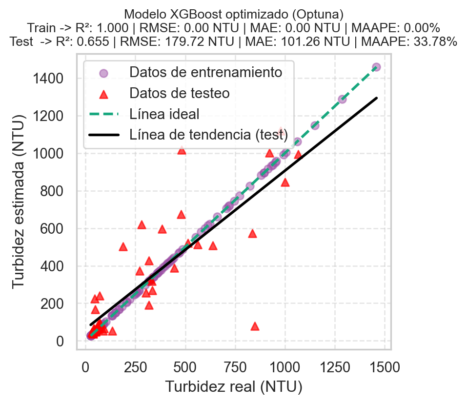
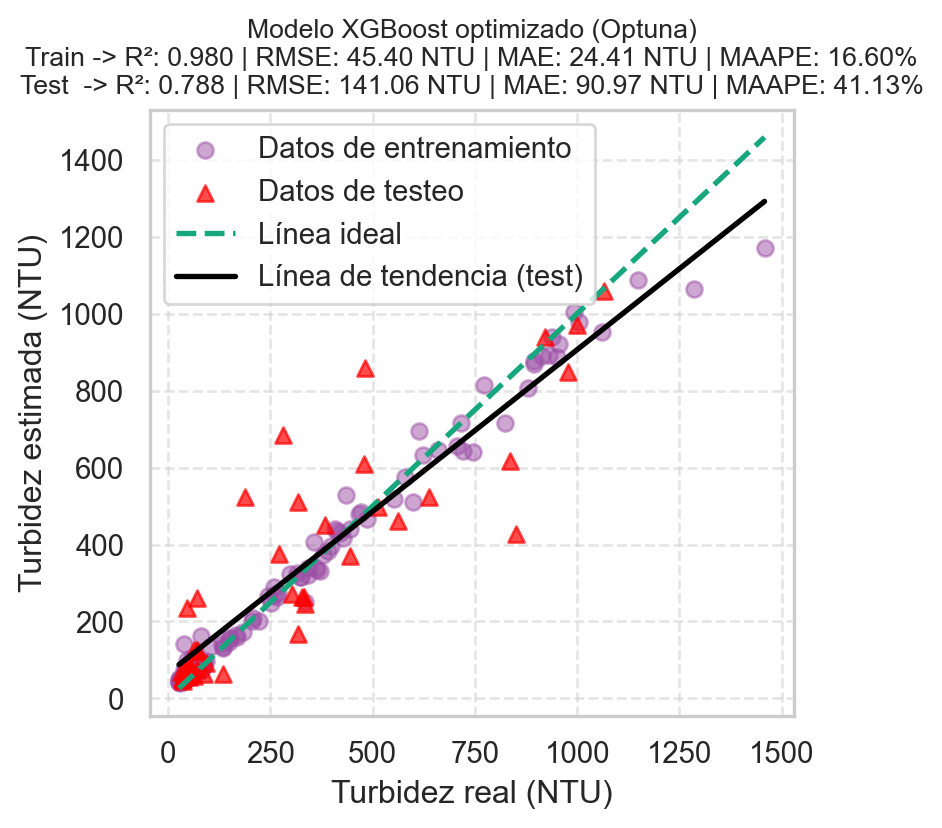

1 Estimacion de Turbidez con modelo XGBOOST del proyecto 2025
Defino 2 puntos de interés, sobre el río paraná
Punto 1 (Chaco)
Punto 2 (Corrientes)
Código
import eeimport pandas as pd# Inicializar con tu proyectoee.Initialize(project='gistaq-2026')# 1. Definir los puntos de interéspunto_1 = ee.Geometry.Point([-58.86813681183558, -27.46512351698905])punto_2 = ee.Geometry.Point([-58.8582877403329, -27.473538528861454])# punto_1 (Chaco) , punto_2 (Corrientes)
Ubicación de los puntos
Nuevo mapa
Make this Notebook Trusted to load map: File -> Trust Notebook
Importo imágenes de Sentinel-2
Código
# 2. Agrupo los puntospuntos_busqueda = ee.FeatureCollection([ ee.Feature(punto_1, {'id_simple': 1}), ee.Feature(punto_2, {'id_simple': 2})])# Mapeo de bandas de GEE hacia las columnas del modelobandas_gee = ["B1", "B2", "B3", "B4", "B5", "B6", "B7", "B8", "B11", "B12", "B8A"]bandas_modelo = ["B01", "B02", "B03", "B04", "B05", "B06", "B07", "B08", "B11", "B12", "B8A"]# 3. Filtro la colección por fecha y lugarcoleccion = (ee.ImageCollection("COPERNICUS/S2_SR_HARMONIZED") .filterDate('2023-01-01', '2025-12-31') .filterBounds(puntos_busqueda))# 4. Función interna para extraer los datos de cada imagen de la seriedef extraer_datos_por_imagen(img): fecha = img.date().format('YYYY-MM-DD')return img.select(bandas_gee + ["SCL"]).reduceRegions( collection=puntos_busqueda, reducer=ee.Reducer.first(), scale=10 ).map(lambda f: f.set('fecha_captura', fecha))# 5. Aplicar la función a toda la colección y aplanar los resultadosvalores_historicos = coleccion.map(extraer_datos_por_imagen).flatten()print("Descargando serie temporal desde Earth Engine...")datos_extraidos = valores_historicos.getInfo()['features']# Lista para almacenar las filas válidasfilas_validas = []for feature in datos_extraidos: propiedades = feature['properties'] clase_scl = propiedades.get('SCL')# Evaluar el SCL (Valor 6 = Agua)if clase_scl ==6: registro_pixel = {'Fecha': propiedades.get('fecha_captura'),'Punto': propiedades.get('id_simple') # Aquí se guarda solo 1 o 2 }# Mapear nombres de bandas y dividir por 10,000for b_gee, b_mod inzip(bandas_gee, bandas_modelo): valor_original = propiedades.get(b_gee)if valor_original isnotNone: registro_pixel[b_mod] = valor_original /10000.0else: registro_pixel[b_mod] =0.0 filas_validas.append(registro_pixel)# 6. Crear el DataFrame y exportarlo a CSVif filas_validas:# Definimos el orden de las columnas con los metadatos al inicio columnas_csv = ['Fecha', 'Punto'] + bandas_modelo df = pd.DataFrame(filas_validas, columns=columnas_csv) nombre_archivo ="serie_temporal_turbidez_final.csv" df.to_csv(nombre_archivo, index=False)print(f"\n¡Éxito! Archivo '{nombre_archivo}' generado correctamente.")print("\nNueva vista previa del contenido del CSV:")print(df.head().to_string(index=False))else:print("No se encontraron registros de agua limpia en ese periodo.")
Estimacion de la turbidez
Código
import pandas as pdimport xgboost as xgbimport os# 1. Rutas de tus archivosruta_modelo =r"D:\Monitoreo 2026\Output\Modelo de Turbidez 2025\modelo_xgboost_optuna.json"nombre_entrada ="serie_temporal_turbidez_final.csv"nombre_salida ="resultados_turbidez_final.csv"# 2. Cargar el CSV con las reflectancias de Sentinel-2ifnot os.path.exists(nombre_entrada):raiseFileNotFoundError(f"No se encontró el archivo {nombre_entrada}. Asegúrate de ejecutar primero el script de Earth Engine.")df_datos = pd.read_csv(nombre_entrada)# 3. Inicializar y cargar tu modelo XGBoost entrenado con Optunaprint("Cargando modelo XGBoost...")modelo = xgb.XGBRegressor()modelo.load_model(ruta_modelo)# 4. Seleccionar estrictamente las columnas con las que se entrenó el modelobandas_modelo = ["B01", "B02", "B03", "B04", "B05", "B06", "B07", "B08", "B11", "B12", "B8A"]X_prediccion = df_datos[bandas_modelo]print(f"Calculando turbidez para {len(df_datos)} registros...")# 5. Realizar la predicción e integrar el resultado al DataFramedf_datos['Turbidez_Estimada'] = modelo.predict(X_prediccion)# 6. Exportar los resultados a un nuevo archivo CSVdf_datos.to_csv(nombre_salida, index=False)print(f"¡Proceso terminado! Archivo guardado correctamente en: {os.path.abspath(nombre_salida)}")# 7. Mostrar una vista previa de las estimaciones en pantallaprint("\nVista previa de las predicciones:")columnas_vista = ['Fecha', 'Punto', 'Turbidez_Estimada']print(df_datos[columnas_vista].head().to_string(index=False))
Gráfico de estimación de la turbidez
Gráfico de estimación de la turbidez
2 Modelado algoritmo XG Boost para estimación de la turbidez
Se entrenará un modelo de machine learning con valores de reflectancia de superficies de Sentinel-2 y datos de turbidez provenientes de la planta potabilizadora “La Toma” de SAMEEP, sobre el riacho Barranqueras.
Trabajamos con la librería pandas para unir los datos de turbidez y de reflectancia en un único arcivo
Código
import pandas as pd# Defino los DataFramedf1 = pd.read_csv(r"Input/tsv/sameep_historicos.tsv", sep='\t')df2 = pd.read_csv(r"Input/tsv/base_de_datos_gis.tsv", sep='\t')# Combino df1 y df2df_combinado = pd.merge(df1, df2, on=["fecha"], how="inner")# Filtro solo las filas que contegan turbidezdf_turb = df_combinado[(df_combinado["param"] =="turbidez")]# Elimino las columnas que no nos interesandf_turb_band = df_turb.drop(columns=["fecha","param"])# Cambiamos el nombre de la columna "valor" por el de "turbidezdf_turb_band.rename(columns={"valor": "turbidez"}, inplace=True)# Pivotamos la tabladf_final = df_turb_band.pivot_table( index="turbidez", columns="banda", values="reflec",)# Creamos tabla finaldf_final.to_csv(r"D:\Monitoreo 2026\Output\csv\df_final.csv", index=True)
turbidez
B01
B02
B03
B04
B05
B06
B07
B08
B11
B12
B8A
0
26.416667
0.163765
0.133815
0.113380
0.100975
0.092420
0.082690
0.085585
0.070600
0.033900
0.020845
0.074250
1
26.650000
0.124000
0.102195
0.099590
0.078690
0.069760
0.048095
0.051555
0.041080
0.025715
0.016775
0.043510
2
27.450000
0.114975
0.089995
0.082655
0.076975
0.067930
0.041710
0.043160
0.035355
0.019175
0.012385
0.032930
3
27.666667
0.127195
0.101405
0.089160
0.079145
0.069715
0.051255
0.052000
0.044325
0.023130
0.015685
0.043835
4
28.816667
0.118150
0.094560
0.087575
0.087335
0.078650
0.048175
0.049565
0.040745
0.019950
0.013145
0.036645
3 Entrenamiento del modelo con todas las bandas
Tabla con hiperparámetros optimizados
max_depth
learning_rate
subsample
colsample_bytree
n_estimators
R2_promedio_CV
0
10
0.158273
0.71368
0.784281
451
0.780991
Cargo Modelo
Gráfica de métricas de desempeño

4 Entrenamiento del modelo excluyendo bandas 1, 11 y 12
Tabla con hiperparámetros optimizados
max_depth
learning_rate
subsample
colsample_bytree
n_estimators
R2_promedio_CV
0
10
0.012086
0.673775
0.730302
310
0.740884
Cargo modelo
Gráfica de métricas de desempeño

4.1 Estimación sobre el río Paraná a partir del modelo sin Bandas 1,11 y 12 de Sentinel-2
Defino 2 puntos de interés, sobre el río paraná
Punto 1 (Chaco)
Punto 2 (Corrientes)
Código
import eeimport pandas as pd# Inicializar con tu proyectoee.Initialize(project='gistaq-2026')# 1. Definir los puntos de interéspunto_1 = ee.Geometry.Point([-58.86813681183558, -27.46512351698905])punto_2 = ee.Geometry.Point([-58.8582877403329, -27.473538528861454])# punto_1 (Chaco) , punto_2 (Corrientes)
Ubicación de los puntos
Importo imágenes de Sentinel-2
Código
import eefrom pathlib import Path# 2. Agrupo los puntospuntos_busqueda = ee.FeatureCollection([ ee.Feature(punto_1, {'id_simple': 1}), ee.Feature(punto_2, {'id_simple': 2})])# Mapeo de bandas de GEE hacia las columnas del modelobandas_gee = ["B2", "B3", "B4", "B5", "B6", "B7", "B8", "B8A"]bandas_modelo = ["B02", "B03", "B04", "B05", "B06", "B07", "B08", "B8A"]# 3. Filtro la colección por fecha y lugarcoleccion = (ee.ImageCollection("COPERNICUS/S2_SR_HARMONIZED") .filterDate('2025-01-01', '2026-07-31') .filterBounds(puntos_busqueda))# 4. Función interna para extraer los datos de cada imagen de la seriedef extraer_datos_por_imagen(img): fecha = img.date().format('YYYY-MM-DD')return img.select(bandas_gee + ["SCL"]).reduceRegions( collection=puntos_busqueda, reducer=ee.Reducer.first(), scale=10 ).map(lambda f: f.set('fecha_captura', fecha))# 5. Aplicar la función a toda la colección y aplanar los resultadosvalores_historicos = coleccion.map(extraer_datos_por_imagen).flatten()print("Descargando serie temporal desde Earth Engine...")datos_extraidos = valores_historicos.getInfo()['features']# Lista para almacenar las filas válidasfilas_validas = []for feature in datos_extraidos: propiedades = feature['properties'] clase_scl = propiedades.get('SCL')# Evaluar el SCL (Valor 6 = Agua)if clase_scl ==6: registro_pixel = {'Fecha': propiedades.get('fecha_captura'),'Punto': propiedades.get('id_simple') # Aquí se guarda solo 1 o 2 }# Mapear nombres de bandas y dividir por 10,000for b_gee, b_mod inzip(bandas_gee, bandas_modelo): valor_original = propiedades.get(b_gee)if valor_original isnotNone: registro_pixel[b_mod] = valor_original /10000.0else: registro_pixel[b_mod] =0.0 filas_validas.append(registro_pixel)# 6. Crear el DataFrame y exportarlo a CSVif filas_validas:# Definimos el orden de las columnas con los metadatos al inicio columnas_csv = ['Fecha', 'Punto'] + bandas_modelo df = pd.DataFrame(filas_validas, columns=columnas_csv) ruta_carpeta = Path(r"D:\Monitoreo 2026\Output\Modelo XGBoost sin b1,11 y 12\Reflectancias Sentinel-2 2025.csv") df.to_csv(ruta_carpeta, index=False)print("\nNueva vista previa del contenido del CSV:")print(df.head().to_string(index=False))else:print("No se encontraron registros de agua limpia en ese periodo.")
EstimaciÓn de la turbidez
Código
import pandas as pdimport xgboost as xgbimport os# 1. Rutas de tus archivosruta_modelo =r"D:\Monitoreo 2026\Output\Estimaciones turbidez XBG 2026\modelo_xgboost_optuna.json"nombre_entrada =r"D:\Monitoreo 2026\Output\Modelo XGBoost sin b1,11 y 12\Reflectancias Sentinel-2 2025.csv"nombre_salida =r"D:\Monitoreo 2026\Output\Modelo XGBoost sin b1,11 y 12\Turbidez.csv"# 2. Cargar el CSV con las reflectancias de Sentinel-2ifnot os.path.exists(nombre_entrada):raiseFileNotFoundError(f"No se encontró el archivo {nombre_entrada}. Asegúrate de ejecutar primero el script de Earth Engine.")df_datos = pd.read_csv(nombre_entrada)# 3. Inicializar y cargar tu modelo XGBoost entrenado con Optunaprint("Cargando modelo XGBoost...")modelo = xgb.XGBRegressor()modelo.load_model(ruta_modelo)# 4. Seleccionar estrictamente las columnas con las que se entrenó el modelobandas_modelo = ["B02", "B03", "B04", "B05", "B06", "B07", "B08", "B8A"]X_prediccion = df_datos[bandas_modelo]print(f"Calculando turbidez para {len(df_datos)} registros...")# 5. Realizar la predicción e integrar el resultado al DataFramedf_datos['Turbidez_Estimada'] = modelo.predict(X_prediccion)# 6. Exportar los resultados a un nuevo archivo CSVdf_datos.to_csv(nombre_salida, index=False)print(f"¡Proceso terminado! Archivo guardado correctamente en: {os.path.abspath(nombre_salida)}")# 7. Mostrar una vista previa de las estimaciones en pantallaprint("\nVista previa de las predicciones:")columnas_vista = ['Fecha', 'Punto', 'Turbidez_Estimada']print(df_datos[columnas_vista].head().to_string(index=False))